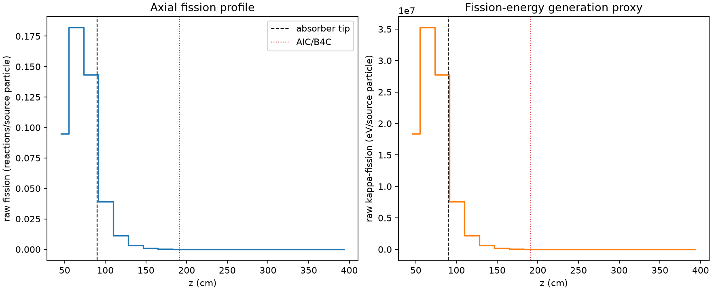
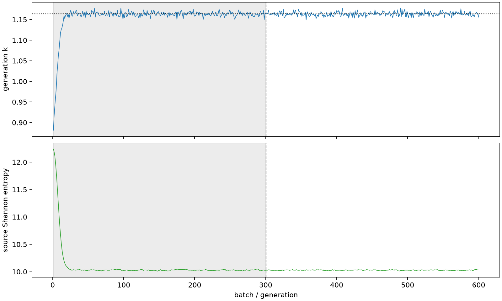

| field | value |
|---|---|
| experiment | V2-STAGE_128_OGRENCI_01-0023 |
| k | 1.1636829040816528 |
| MC standard error | 0.00019466693603415047 |
| seconds | 936.7091870919976 |
| acceptance | not_assessed |
| convergence | review_required |
Completed is output integrity only; physical and statistical review required. Zero tallies do not prove zero production or zero uncertainty.
| diagnostic | value |
|---|---|
| geometric fuel voxels | 5280 |
| zero fission tally voxels | 1921 |
| low signal fuel voxels | 2998 |
| low signal fission share | 0.00010527105547551141 |
| low signal kappa share | 0.00010530545552164546 |
| important fission share | 0.9502563102416801 |
| previous filter included | 2282 |
| duration estimate s | 1562.5173488400023 |
| actual minus estimate s | -625.8081617480047 |
| fission relative MC error | statistics |
|---|---|
| all_geometric_fuel | {"voxels": 5280, "positive_mean_voxels": 3359, "zero_mean_voxels": 1921, "undefined_relative_error_voxels": 1921, "median": 0.053984444395134085, "p95": 0.9680140631201857, "maximum": 1.0000000000000002} |
| low_signal | {"voxels": 2998, "positive_mean_voxels": 1077, "zero_mean_voxels": 1921, "undefined_relative_error_voxels": 1921, "median": 0.5900044385093947, "p95": 1.0, "maximum": 1.0000000000000002} |
| important_95pct | {"voxels": 995, "positive_mean_voxels": 995, "zero_mean_voxels": 0, "undefined_relative_error_voxels": 0, "median": 0.0050303736051630875, "p95": 0.008845462937162745, "maximum": 0.009797852245420631} |
| outside_previous_filter | {"voxels": 2998, "positive_mean_voxels": 1077, "zero_mean_voxels": 1921, "undefined_relative_error_voxels": 1921, "median": 0.5900044385093947, "p95": 1.0, "maximum": 1.0000000000000002} |
| kappa_fission relative MC error | statistics |
|---|---|
| all_geometric_fuel | {"voxels": 5280, "positive_mean_voxels": 3359, "zero_mean_voxels": 1921, "undefined_relative_error_voxels": 1921, "median": 0.05389920544793675, "p95": 0.9679625686440663, "maximum": 1.0000000000000002} |
| low_signal | {"voxels": 2998, "positive_mean_voxels": 1077, "zero_mean_voxels": 1921, "undefined_relative_error_voxels": 1921, "median": 0.589614601951434, "p95": 1.0, "maximum": 1.0000000000000002} |
| important_95pct | {"voxels": 995, "positive_mean_voxels": 995, "zero_mean_voxels": 0, "undefined_relative_error_voxels": 0, "median": 0.005024594707798017, "p95": 0.008832908650042487, "maximum": 0.009786978718255717} |
| outside_previous_filter | {"voxels": 2998, "positive_mean_voxels": 1077, "zero_mean_voxels": 1921, "undefined_relative_error_voxels": 1921, "median": 0.589614601951434, "p95": 1.0, "maximum": 1.0000000000000002} |
| axial bin | fission share | kappa-fission share |
|---|---|---|
| 1 | 0.19951164490590162 | 0.19951041067685824 |
| 2 | 0.38304461356122305 | 0.3830259068124207 |
| 3 | 0.3015931176461551 | 0.3015840803056744 |
| 4 | 0.08249777411553293 | 0.08251787355232262 |
| 5 | 0.023666899395272303 | 0.02367307770521228 |
| 6 | 0.006902474797443952 | 0.006904393738314712 |
| 7 | 0.0019897419913472735 | 0.0019902862691935667 |
| 8 | 0.0005885156566963834 | 0.0005886859163439228 |
| 9 | 0.00015273208448957697 | 0.00015278161783459658 |
| 10 | 3.969354580978151e-05 | 3.9705382729007876e-05 |
| 11 | 9.371563186279883e-06 | 9.37478100790935e-06 |
| 12 | 2.494249410064e-06 | 2.496640388679059e-06 |
| 13 | 8.909816579999295e-07 | 8.91097466115171e-07 |
| 14 | 2.4571819201489933e-08 | 2.4580945378889473e-08 |
| 15 | 1.0934054573047444e-08 | 1.0923287862098044e-08 |
| 16 | 0.0 | 0.0 |
| 17 | 0.0 | 0.0 |
| 18 | 0.0 | 0.0 |
| 19 | 0.0 | 0.0 |
| 20 | 0.0 | 0.0 |
Histories include the inactive-to-active transition at batch 300. kappa-fission approximates fission energy production, not total heat deposition.

